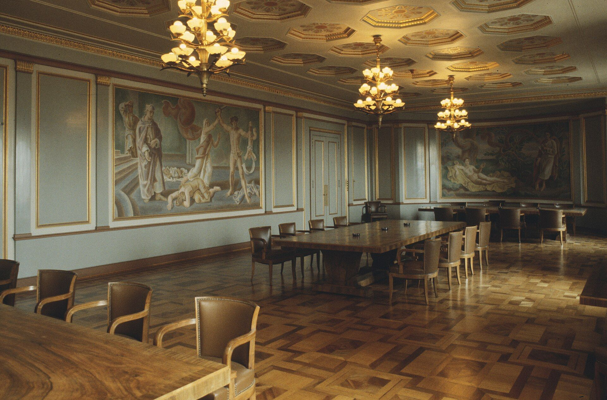

What sets a certified specialist apart
In order to facilitate the search for a qualified lawyer for persons seeking legal advice, the Swiss Bar Association SBA introduced in 2006, with the title of a “Certified Specialist SBA”, a new quality label in the fields of Labour Law, Inheritance Law, Construction and Real Estate Law, Family Law as well as Torts and Insurance Law.

The title “Certified Specialist SBA Labour Law” may be obtained only by a lawyer meeting defined requirements. Apart from an above-average experience in the area of Labour Law and several years of professional experience as a lawyer, it is necessary to accomplish an intensiv and practice-oriented continuing education followed by a written exam and a colloquium. Subsequent to obtaining the title, certified specialists must furthermore undergo a regular continuing education.
 LawyersFind a specialist202 certified specialists in 17 cantons
LawyersFind a specialist202 certified specialists in 17 cantons
Certified Specialists SBA in Labour Law
Advantages for clients
Clients facing complex legal questions benefit widely from the increased competence of the certified specialists. Due to his or her specific knowledge, certified specialists may often implement the clients’ requirements with more swiftness and effectiveness.
A broad knowledge and a great experience
A certified specialist nevertheless remains familiar with general practice and assumes all duties inherent to a lawyer, as certified specialists continue to have a broad knowledge and a great experience in the Swiss legal system. Apart from their specialisation, they are consequently in a position to provide persons seeking legal services with competent and complete advice in all other areas of law.
Specialists across Switzerland
 Meyer Thomas M. lic.iur.Meyer & WipfZürich · ZH
Meyer Thomas M. lic.iur.Meyer & WipfZürich · ZH Geel Gian lic. iur., LL.M.Reichenbach Rechtsanwälte AGZürich · ZHRaess-Eichenberger Susanne Dr. iur.Nötzli Raess Bächtold RechtsanwälteZürich · ZH
Geel Gian lic. iur., LL.M.Reichenbach Rechtsanwälte AGZürich · ZHRaess-Eichenberger Susanne Dr. iur.Nötzli Raess Bächtold RechtsanwälteZürich · ZH Binder ErichBinder Sutter Mumenthaler WigetZürich · ZH
Binder ErichBinder Sutter Mumenthaler WigetZürich · ZH Bächtold Rahel lic. iur.Nötzli Raess Bächtold RechtsanwälteZürich · ZH
Bächtold Rahel lic. iur.Nötzli Raess Bächtold RechtsanwälteZürich · ZH Chavanne Michelr & associés, avocatsLausanne · VD
Chavanne Michelr & associés, avocatsLausanne · VD Nötzli Harry F. Dr. iur.Nötzli Raess Bächtold RechtsanwälteZürich · ZH
Nötzli Harry F. Dr. iur.Nötzli Raess Bächtold RechtsanwälteZürich · ZH Bonard AlineCBWM & AssociésLausanne · VD
Bonard AlineCBWM & AssociésLausanne · VD Wyler RémyCBWM & AssociésLausanne · VD
Wyler RémyCBWM & AssociésLausanne · VD Heller Heinz Dr.iur.Heller Rechtsanwälte AGZürich · ZH
Heller Heinz Dr.iur.Heller Rechtsanwälte AGZürich · ZHSpheres of activity
Specialised lawyers give you advice in all fields or in certain areas of Labour Law, in particular in those relating to:
Spheres of activity Swiss Federal Supreme Court building in Lausanne
Swiss Federal Supreme Court building in LausanneBy canton
202 certified specialists in 17 cantons